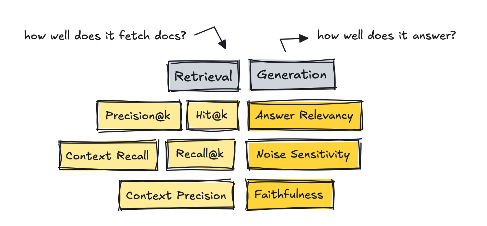
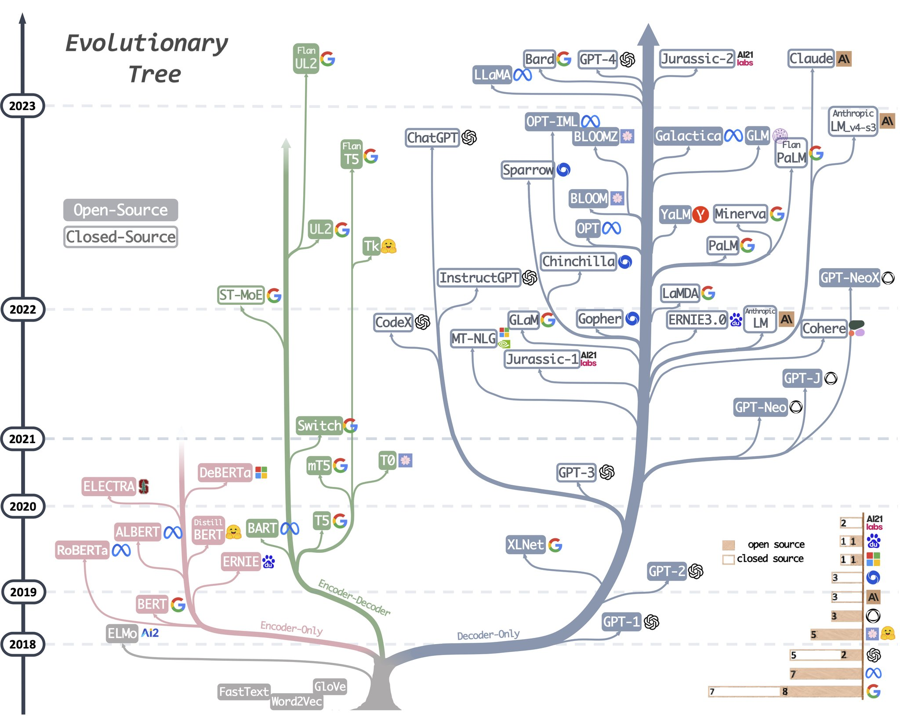
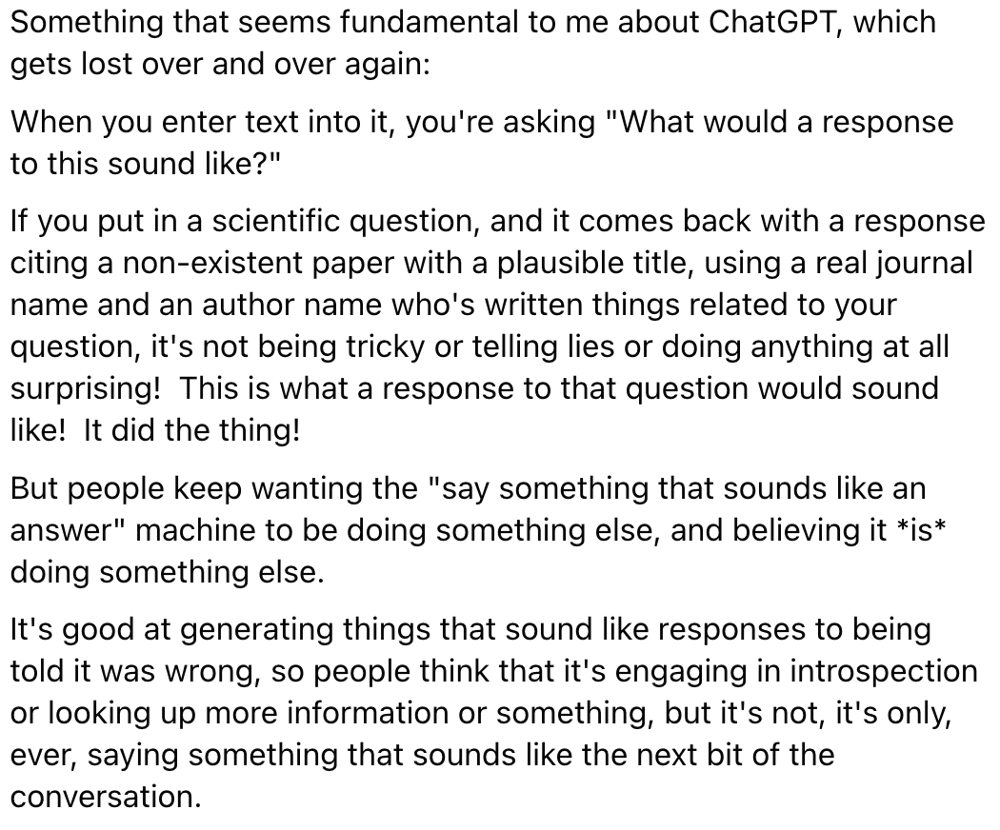
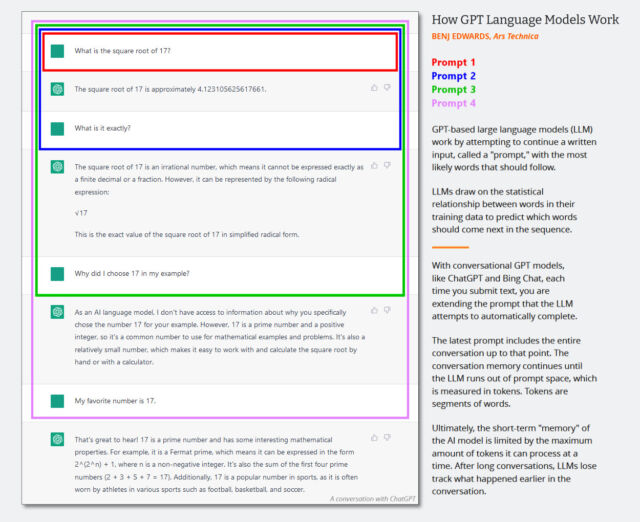

General
- Simple API Wrappers
- {tidychatmodels} - Communicates with different chatbot vendors like openAI, mistral.ai, etc. using the same interface.
- {gemini.R} - Wrapper around Google Gemini API
- {rollama} - Wrapper around the Ollama API
- {chatAI4R} - Wrapper around OpenAI API
- {TheOpenAIR} - Wrapper around OpenAI models
- Code Assistants
- {chattr} - Code assistant for RStudio
- {gander} - A higher-performance and lower-friction chat experience for data scientists in RStudio and Positron–sort of like completions with Copilot, but it knows how to talk to the objects in your R environment.
- Brings {ellmer} chats into your project sessions, automatically incorporating relevant context and streaming their responses directly into your documents.
- {btw} - Helps you describe your computational environment to LLMs
- Assembles context on your R environment, package documentation, and working directory, copying the results to your clipboard for easy pasting into chat interfaces.
- Wraps methods that can be easily incorporated into ellmer tool calls for describing various kinds of objects in R
- Support for {mcptools}
- Processing
- {toon} - Token-Oriented Object Notation (TOON) is a compact, human-readable serialization format designed for passing structured data to Large Language Models with significantly reduced token usage.
- It’s intended for LLM input as a lossless, drop-in representation of JSON data.
- {toon} - Token-Oriented Object Notation (TOON) is a compact, human-readable serialization format designed for passing structured data to Large Language Models with significantly reduced token usage.
- Diagnostics
- {samesies} - A reliability tool for comparing the similarity of texts, factors, or numbers across two or more lists. The motivating use case is to evaluate the reliability of Large Language Model (LLM) responses across models, providers, or prompts
- {vitals} - A framework for large language model evaluation in R. It’s specifically aimed at ellmer users who want to measure the effectiveness of their LLM products
- Measure whether changes in your prompts or additions of new tools improve performance in your LLM product
- Compare how different models affect performance, cost, and/or latency of your LLM product
- Surface problematic behaviors in your LLM product
- Local
- {localLLM} - Provides an easy-to-use interface to run local large language models (LLMs) directly in R.
- Uses the performant llama.cpp library as the backend and allows you to generate text and analyze data with LLM
- {ollamar} - R version of {ollama} python and {ollama} JS libraries
- Makes it easy to work with data structures (e.g., conversational/chat histories) that are standard for different LLMs (such as those provided by OpenAI and Anthropic).
- Lets you specify different output formats (e.g., dataframes, text/vector, lists) that best suit your need, allowing easy integration with other libraries/tools and parallelization via the {httr2} library.
- {shiny.ollama} - Chat offline with open-source LLMs like deepseek-r1, nemotron, qwen, llama and more all through a simple R package powered by Shiny and Ollama.
- {localLLM} - Provides an easy-to-use interface to run local large language models (LLMs) directly in R.
- {edgemodelr} - Enables R users to run large language models locally using ‘GGUF’ model files and the ‘llama.cpp’ inference engine
- GGUF - A binary format that is optimized for quick loading and saving of models, making it highly efficient for inference purposes.
- Models initially developed in frameworks like PyTorch can be converted to GGUF format for use with those engines.
- GGUF on Huggingface
- GGUF - A binary format that is optimized for quick loading and saving of models, making it highly efficient for inference purposes.
- {ellmer} - Supports a wide variety of LLM providers and implements a rich set of features including streaming outputs, tool/function calling, structured data extraction, and more.
- {mall} (Intro)- Text analysis by using rows of a dataframe along with a pre-determined (depending on the function), one-shot prompt. The prompt + row gets sent to an Ollama LLM for the prediction
- Also available in Python
- Features
- Sentiment analysis
- Text summarizing
- Classify text
- Extract one, or several, specific pieces information from the text
- Translate text
- Verify that something it true about the text (binary)
- Custom prompt
- {batchLLM} - Process prompts through multiple LLMs at the same time.
- Uses data frames and column rows as LLM input and a new column with the text completions as the output.
- Supports OpenAI, Claude & Gemini.
- {llmR} - Interface to OpenAI’s GPT models, Azure’s language models, Google’s Gemini models, or custom local servers
- Unified API: Setup and easily switch between different LLM providers and models using a consistent set of functions.
- Prompt Processing: Convert chat messages into a standard format suitable for LLMs.
- Output Processing: Can request JSON output from the LLMs and tries to sanitize the response if the parsing fails.
- Error Handling: Automatically handle errors and retry requests when rate limits are exceeded. If a response is cut due to token limits, the package will ask the LLM to complete the response.
- Custom Providers: Interrogate custom endpoints (local and online) and allow implementation of ad-hoc LLM connection functions.
- Mock Calls: Allows simulation of LLM interactions for testing purposes.
- Logging: Option to log the LLM response details for performance and cost monitoring
- {aigenflow} - Enables you to create intelligent agents and orchestrate workflows with just a few lines of code, making advanced AI capabilities accessible to developers, data scientists, and researchers across diverse fields.
- {hellmer} - Enables sequential or parallel batch processing for chat models from ellmer.
- {querychat} (also in python) - A drop-in component for Shiny that allows users to query a data frame using natural language. The results are available as a reactive data frame, so they can be easily used from Shiny outputs, reactive expressions, downloads, etc.
- {shinychat} - Shiny ui component for LLM apps
Example: Basic (source)
library(shiny) library(shinychat) ui <- bslib::page_fluid( chat_ui("chat") ) server <- function(input, output, session) { chat <- ellmer::chat_ollama(system_prompt = "You are a helpful assistant", model = "phi4") observeEvent(input$chat_user_input, { stream <- chat$stream_async(input$chat_user_input) chat_append("chat", stream) }) } shinyApp(ui, server)
Misc
Resources
- Large Language Model tools for R
- LLM Leaderboard Collection: A useful collection of LLM leaderboards for finding the right LLM for your use case
- How well do LLMs generate R code? - Dashboard that’s updated with the latest cloud models. Tracks R code accuracy and cost.
- Awesome Generative AI Data Scientist - Curated list of LLM learning resources
- Awesome LLM Resources - Tracks tools, platforms, etc.
Benchmarks
Diagnostics
Notes from
Eval Frameworks (Up-to-date list)
- All offer the ability to run evals on your own dataset, work for multi-turn, RAG, and agents in some way or another, support LLM-as-a-judge, allow setting up custom metrics, and are CI-friendly.
- Frameworks uses different names for essentially the same thing
- e.g. faithfulness in one may mean the same as groundedness in another. Answer relevancy may be the same as response relevance, and so on.
- Custom metrics are what developers set up the most, so don’t get stuck on who offers what metric. Your use case will be unique, and so will how you evaluate it.
- RAGAS
- Primarily built as a metric library for evaluating RAG applications (although they offer other metrics as well).
- Integrates with LangChain
- DeepEval
- Possibly the most comprehensive evaluation library with over 40 metrics available and the most complete, out-of-the-box suite of tools.
- Offers a framework called G-Eval, which helps you set up custom metrics quickly making it the fastest way from idea to a runnable metric.
- Provides red teaming via their DeepTeam framework, which automates adversarial testing of LLM systems. There are other frameworks out there that do this too, although perhaps not as extensively.
- OpenAI
- A very lightweight solution that expects you to set up your own metrics, although they provide an example library to help you get started.
- Better suited when you want bespoke logic, not when you just need a quick judge.
- MLFlow’s Evals
- Primarily built to evaluate traditional ML pipelines, so the number of metrics they offer is lower for LLM-based apps.
Application-specific
- Generic metrics are probably not enough though. You need a few custom ones for your use case. So the evals differ by application.
- For a coding copilot, you could track what percent of completions a developer accepts (acceptance rate) and whether the full chat reached the goal (completeness).
- For commerce agents, you might measure whether the agent picked the right products and whether answers are grounded in the store’s data.
- Security and safety related metrics, such as bias, toxicity, and how easy it is to break the system (jailbreaks, data leaks).
RAG
- Retrieval:
- Metrics
- Reference-free methods that use a LLM as a judge
- These count how many of the truly relevant chunks made it into the top K list based on the query, using an LLM to judge.
- RAGAS and DeepEval introduces metrics like Context Recall and Context Precision.
- Companies sample-audit with humans every few weeks to stay real.
- Precision@k measures the amount of relevant documents in results
- Recall@k measures how many relevant documents were retrieved based on the gold reference answers
- Hit@k measures whether at least one relevant document made it into the results
- Reference-free methods that use a LLM as a judge
- Low scores \(\rightarrow\) tune the system by setting up better chunking strategies, changing the embedding model, adding techniques such as hybrid search and re-ranking, filtering with metadata, and similar approaches.
- Evaluation Datasets
- Mine questions from real logs and then use a human to curate them.
- Use dataset generators with the help of a LLM, which exist in most frameworks or as standalone tools like YourBench.
- Metrics
- Agents
- Task Completion - Does it pick the correct tool at the correct time?
- Use some kind of gold script with ground truth built in to test each run. Author that once and then use it each time you make changes.
- Tool Correctness - Does it move through the process and finish the goal?
- Read the entire trace and the goal, and return a number between 0 and 1 with a rationale. This should measure how effective the agent is at accomplishing the task.
- Application-specific
- Task Completion - Does it pick the correct tool at the correct time?
- Retrieval:
Use Cases
- For public facing apps, LLMs should only be used to translate user input to make it possible to select a function(s) to be executed, then translate the output of the function(s) into human language the user can understand. They should not be used to execute logic. (Apr 2025 article)
- Understanding code (Can reduce cognative load)(article)
- During code reviews or onboarding new programmers
- under-commented code
- Generating the code scaffold for a problem where you aren’t sure where or how to start solving it.
- LLMs don’t require removing stopwords during preprocessing of documents
Generate “Impossibility” List (source)
- “I suggest that people and organizations keep an ‘impossibility list’ - things that their experiments have shown that AI can definitely not do today but which it can almost do. . . . When AI models are updated, test them on your impossibility list to see if they can now do these impossible tasks.” - Ethan Mollick, Gradually, then Suddenly: Upon the Threshold”
Evolution of LLMs

{kind=link}
{kind=link}
Description
What chatGPT is:
“What would a response to this question sound like” machine Researchers build (train) large language models like GPT-3 and GPT-4 by using a process called “unsupervised learning,” which means the data they use to train the model isn’t specially annotated or labeled. During this process, the model is fed a large body of text (millions of books, websites, articles, poems, transcripts, and other sources) and repeatedly tries to predict the next word in every sequence of words. If the model’s prediction is close to the actual next word, the neural network updates its parameters to reinforce the patterns that led to that prediction.
Conversely, if the prediction is incorrect, the model adjusts its parameters to improve its performance and tries again. This process of trial and error, though a technique called “backpropagation,” allows the model to learn from its mistakes and gradually improve its predictions during the training process. As a result, GPT learns statistical associations between words and related concepts in the data set.
In the current wave of GPT models, this core training (now often called “pre-training”) happens only once. After that, people can use the trained neural network in “inference mode,” which lets users feed an input into the trained network and get a result. During inference, the input sequence for the GPT model is always provided by a human, and it’s called a “prompt.” The prompt determines the model’s output, and altering the prompt even slightly can dramatically change what the model produces.Iterative prompting is limited by the size of the model’s “context window” since each prompt is appended onto the previous prompt.  ChatGPT is different from vanilla GPT-3 because it has also been trained on transcripts of conversations written by humans. “We trained an initial model using supervised fine-tuning: human AI trainers provided conversations in which they played both sides—the user and an AI assistant,”
ChatGPT has also been tuned more heavily than GPT-3 using a technique called “reinforcement learning from human feedback,” or RLHF, where human raters ranked ChatGPT’s responses in order of preference, then fed that information back into the model. This has allowed the ChatGPT to produce coherent responses with fewer confabulations than the base model. The prevalence of accurate content in the data set, recognition of factual information in the results by humans, or reinforcement learning guidance from humans that emphasizes certain factual responses.
Two major types of falsehoods that LLMs like ChatGPT might produce. The first comes from inaccurate source material in its training data set, such as common misconceptions (e.g., “eating turkey makes you drowsy”). The second arises from making inferences about specific situations that are absent from its training material (data set); this falls under the aforementioned “hallucination” label.
Whether the GPT model makes a wild guess or not is based on a property that AI researchers call “temperature,” which is often characterized as a “creativity” setting. If the creativity is set high, the model will guess wildly; if it’s set low, it will spit out data deterministically based on its data set. If creativity is set low, “[It] answers ‘I don’t know’ all the time or only reads what is there in the Search results (also sometimes incorrect). What is missing is the tone of voice: it shouldn’t sound so confident in those situations.”
In some ways, ChatGPT is a mirror: It gives you back what you feed it. If you feed it falsehoods, it will tend to agree with you and “think” along those lines. That’s why it’s important to start fresh with a new prompt when changing subjects or experiencing unwanted responses.
“One of the most actively researched approaches for increasing factuality in LLMs is retrieval augmentation—providing external documents to the model to use as sources and supporting context,” said Goodside. With that technique, he explained, researchers hope to teach models to use external search engines like Google, “citing reliable sources in their answers as a human researcher might, and rely less on the unreliable factual knowledge learned during model training.” Bing Chat and Google Bard do this already by roping in searches from the web, and soon, a browser-enabled version of ChatGPT will as well. Additionally, ChatGPT plugins aim to supplement GPT-4’s training data with information it retrieves from external sources, such as the web and purpose-built databases.
Other things that might help with hallucination include, “a more sophisticated data curation and the linking of the training data with ‘trust’ scores, using a method not unlike PageRank… It would also be possible to fine-tune the model to hedge when it is less confident in the response.” (arstechnica article)